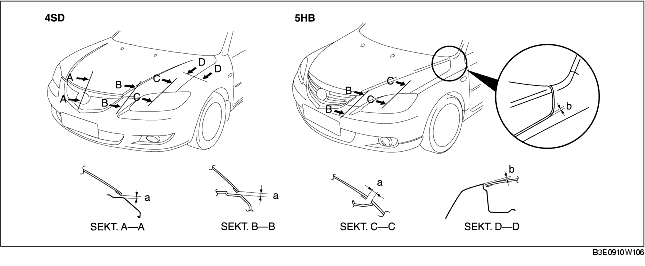

JUSTERING AV MOTORHUV
B3E091056601W02
Justering av gap
1. Demontera följande delar:
-
(1) Främre sidoblinkers (Se DEMONTERING/MONTERING AV FRÄMRE SIDOBLINKERS.)
-
(2) Främre stötfångare (Se DEMONTERING/MONTERING AV FRÄMRE STÖTFÅNGARE.)
-
(3) Främre kombinationsljus (Se DEMONTERING/MONTERING AV DET FRÄMRE KOMBINATIONSLJUSET.)
-
(4) Främre innerskärm (Se DEMONTERING/MONTERING AV FRÄMRE STÄNKSKÄRM.)
2. Lossa motorhuvens monteringsbultar för gångjärnet och justera motorhuven.
3. Dra åt bultarna.
4. Kontrollera att gapet mellan motorhuv och kaross är inom de angivna specifikationerna.
-
Standardspel
-
a: 0.2-3,8 mm {0,0079-0,14 tum}
-
b: -1,0-3,0 mm {-0,039-0,11 tum} (4SD)
-
b: -1,5-2,5 mm {-0,059-0,098 tum} (5HB)
-
c: -0,5-2,5 mm {-0,019-0,098 tum} (4SD)
-
c: -1,0-2,0 mm {-0,039-0,078 tum} (5HB)
-
d: 2.5-4,5 mm {0,10-0,17 tum}
Justering av höjdskillnad
1. Vrid på gummistoppen för att justera motorhuvens höjd.
2. Kontrollera att gapet mellan motorhuv och kaross är inom de angivna specifikationerna.

-
Standardspel
-
a: 3.0-6,0 mm {0,12-0,23 tum}
-
b: -1,5-0,5 mm {-0,059-0,019 tum}
-
c: -1,0-1,0 mm {-0,39-0,39 tum}